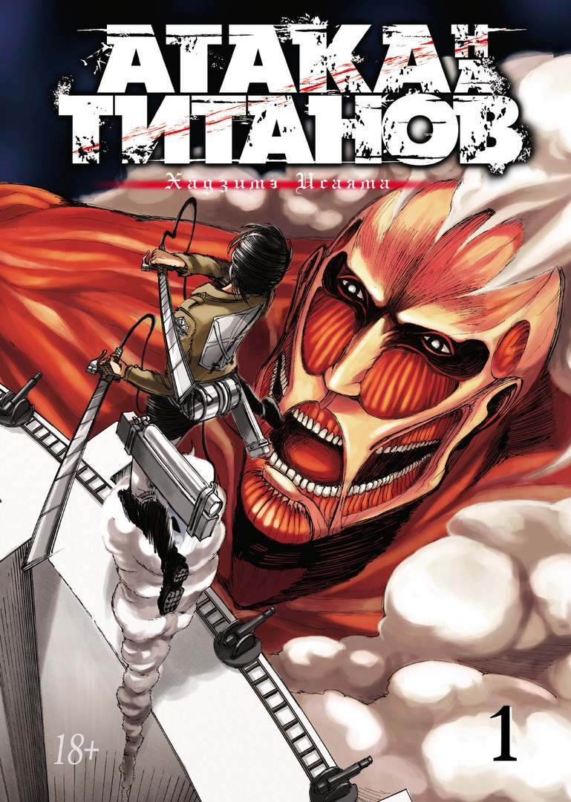
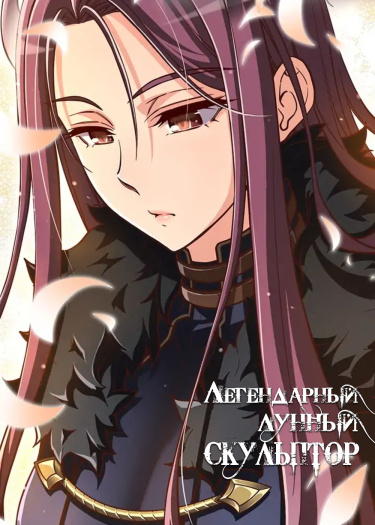
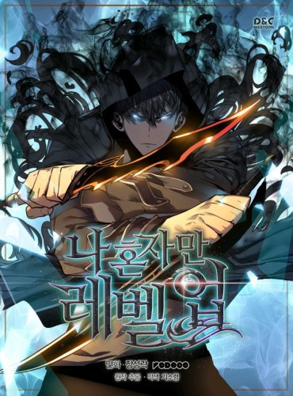
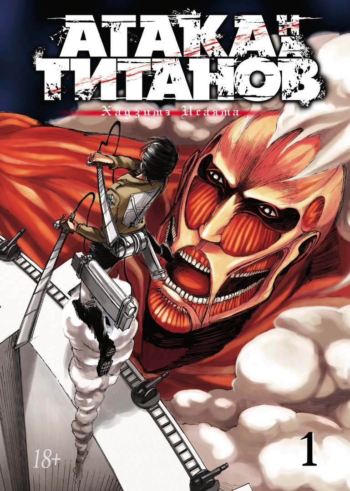
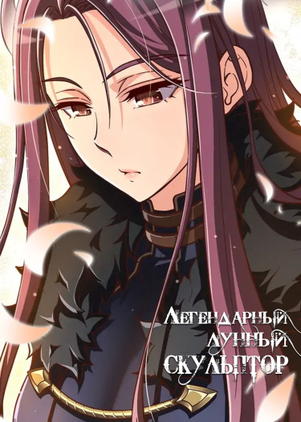
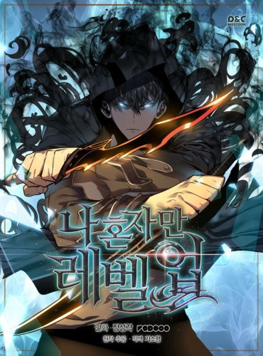

  
  
Манга Атака Титанов - признанная в рядах анимешников манга для любителей приключений, интриг, мистики и сверхъестественного. Главы ежемесячно выпускается японским издательством "Коданся". Манга рассказывает нам о мире после вторжения Титанов. Век назад цивилизация людей очень сильно пострадала от Титанов и человечество было вынуждено защищаться от нападающих громадными стенами. Все действия происходят в постапокалиптическом вымышленном мире, где герои манги находятся под защитой великих стен: Мария, Роза, Сина. После падения внешней стены Мария, главные героями манги становятся подростки Микаса, Армин и Эрен. Они своими силами пытаются спасти город за стеной Роза от Титанов, которые безвольно и бездушно пожирают живых людей.
Главный герой Хэн пережил очень трудное детство в нищете, это сделало его очень сильным, безумным и навязчивой личностью. Он всеми силами пытается избежать повтора событий и обезопасить свою сестру и бабушку от бед внешнего мира, поэтому он погружается во всемирно известную игру жанра VRMMO - "Королевская дорога". На протяжении всего пути ему будут встречаться очень уникальные люди, с которыми у него будут весьма неординарные отношения.
10 лет назад, после того, как «Врата», соединившие реальный мир с параллельным, открылись, некоторые из людей получили силу охотиться на монстров внутри "Врат".Они известны как «Охотники». Однако не все Охотники сильные. Меня зовут Сон Джин Ву - охотник E-ранга. Я тот, кто рискует своей жизнью в самых низких уровнях подземелья. Не имея никаких сверхсильных навыков, я едва зарабатывал необходимые деньги, сражаясь в низкоуровневых подземельях ... по крайней мере, пока я не нашел скрытое подземелье с самыми трудными проблемами в подземельях D-ранга! В конце концов, когда я умер, я внезапно получил странную силу, журнал заданий, который мог видеть только я, секрет для поднятия уровня, о котором знаю только я! Если я тренировался в соответствии с моими заданиями и охотился на монстров, мой уровень повышался. Переход от самого слабого Охотника к самому сильному, Охотнику S-ранга!